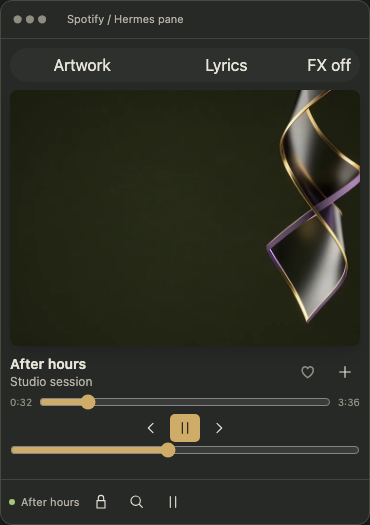

<!doctype html><html lang="en"><meta charset="utf-8"><title>Hermes Spotify Player 1.3 social composition</title><style>*{box-sizing:border-box}body{margin:0;width:1200px;height:675px;background:#1b1d1b;color:#e7e4da;font-family:-apple-system,BlinkMacSystemFont,Arial,sans-serif;padding:34px 48px}header{display:flex;justify-content:space-between;align-items:center;border-bottom:1px solid #46483f;padding-bottom:18px;font-size:18px}header small{font:11px monospace;letter-spacing:.14em;color:#c3bfae}main{display:grid;grid-template-columns:1fr 325px;gap:55px;align-items:center;height:493px}h1{font-size:60px;line-height:1.03;letter-spacing:-3px;font-weight:500;margin:0 0 24px}em{font-family:Georgia,serif;font-weight:400;color:#cfad68}p{font-size:19px;color:#b4b0a5;line-height:1.55}img{width:310px;max-height:460px;object-fit:contain;justify-self:end}ul{padding:0;list-style:none;display:flex;gap:20px;font:11px monospace;color:#b4b0a5;margin:25px 0 0}li{border-top:1px solid #807652;padding-top:12px}footer{display:flex;justify-content:space-between;border-top:1px solid #46483f;padding-top:16px;font:10px monospace;color:#a6a394}footer b{font-weight:400;color:#cfad68}</style><header><span>Hermes × Spotify</span><small>PLAYER 1.3 / NATIVE MACOS</small></header><main><section><h1>Keep the music.<br><em>Lose the switching.</em></h1><p>Spotify controls inside Hermes.<br>Nokie glow. Optional WebGL.<br>No second web player.</p><ul><li>SHARED STATUS CACHE</li><li>HIDDEN? POLLING STOPS.</li><li>EFFECTS OFF BY DEFAULT</li></ul></section></main><footer><b>github.com/janestreetshiller/hermes-spotify-player</b><span>UI DEMO · SIMULATED PLAYBACK · ORIGINAL AI-GENERATED ARTWORK</span></footer></html>
